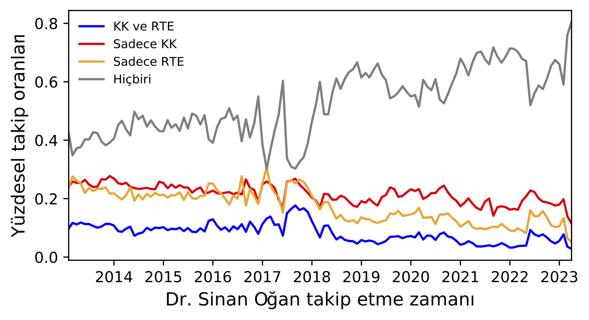

|
RECEP TAYYİP ERDOĞAN |
KEMAL KILIÇDAROĞLU |
Millet ve Cumhur İttifakı’nın cumhurbaşkanı adaylarının salt çoğunluğa ulaşamadığı 14 Mayıs seçimleri milliyetçi kesimin odağında olduğu yeni bir gündem yarattı. Recep Tayyip Erdoğan’ın %49.52, Kemal Kılıçdaroğlu’nun %44.88 bandında kaldığı seçimlerde, Ata İttifakı’nın Cumhurbaşkanı adayı Sinan Oğan %5.17 oy alarak seçimin ikinci tura kalmasında önemli bir rol oynadı. Kendisi ikinci tur seçimlerine katılmayacak olsa da seçmenlerinin aday tercihi 28 Mayıs günü belirleyici olabilir. Bu duruma paralel olarak, Sinan Oğan’ın genel olarak sosyal medya ağı, özelde Twitter takipçileri nezdinde yaptığımız sosyal medya analizi takipçi özelliklerine dair önemli ipuçları verecektir.
Analizimiz ayrıca Sinan Oğan takipçilerinin farklı siyasi bloklarda bulunan MHP ve İYİ Parti ile olan takip ilişkisine de değinmektedir. Farklı siyasi ittifaklarda yer alan ülkücü kökenli siyasi partiler Türkiye genelinde %22.98 oranında oy aldı (MHP: 10.08, İYİ Parti: 9.69, BBP: 0.98, Zafer: 2.23). Bu durum Türkiye’de her iki siyasi ittifakın da milliyetçileştiği önemli bir dönemeçten geçtiğini gösteriyor. Ayrıca, milliyetçi partilerin kendi içerisindeki bölünme ve anlaşmazlıklar gelecekteki siyasi kompozisyon için önemlidir. Bugün Meral Akşener de, Sinan Oğan da 2015-16 sürecinde kurultayda MHP başkanlığı için adaylığını açıklayan isimler. Dolayısıyla Sinan Oğan’a oy veren yurttaşların hangi siyasi ittifaka daha yakın olduğu bu kişilerin hangi ülkücü harekete daha yakın olduğu ile de ilişkilidir. Sinan Oğan’ın sosyal medyadaki ilişki ağının hangi ülkücü kökenli siyasi parti ve liderle daha fazla aşina olduğu seçimler için önemli teşkil eden ayrı bir tartışma konusudur. Araştırmamız bu anlamda milliyetçiler üzerine yoğunlaşan sonraki araştırmalar için de önem kazanmaktadır.
Oğan’ın hem iktidar hem de muhalefetin politikalarından rahatsız olan genç seçmenleri dikkate alması ve mülteci karşıtlığı üzerinden yükselen dalgayı hedeflemesi potansiyel olarak çeşitli bir seçmen tabanına işaret ediyor. Sinan Oğan’ın milliyetçi kesim içerisindeki ayrıksı konumunu da ayrıca not etmek gerekir. Daha önce MHP’den iki kere ihraç edilmesi ana akım ülkücü hareketlerle gerilimli bir ilişkisinin olduğunu göstermekle birlikte, kendisini yeni bir milliyetçi odak olarak tanımlamaktadır. Ata İttifakı’nın ikinci tur seçimlerinde belirleyici durumu ortaya çıktıktan hemen sonra MHP yönetiminden Sinan Oğan’a karşı olumsuz bir açıklama geldi. Yani Oğan’ın seçmenlerinin hangi cumhurbaşkanı adayına yöneleceği tahmini çok zor bir konu. Fakat biz bu kısa raporda Oğan’ın Twitter trendleri üzerinden, yaş ve cinsiyet gibi faktörlere de bakarak, takipçilerinin hangi siyasi ilişki ağını öncelediğini göstereceğiz.
Sinan Oğan’ın Twitter platformu üzerinde kullandığı hesap (@DrSinanOgan) seçim süresince yüzbinlerce takipçi kazandı. Bu hesap ve diğer siyasiler nezdinde yaptığımız analizlerde paylaştıkları mesajları inceledik ve takipçilerin cinsiyet ve yaş dağılımları üzerine yoğunlaştık. Sinan Oğan için olan veriyi linkten inceleyebilirsiniz. Sinan Oğan’ın hesabını incelediğimizde diğer siyasilerden en belirgin şekilde ortaya çıkan özelliği kısmen daha yaşlı ve erkek ağırlıklı bir takipçi kitlesi olduğu yönündeydi.
Burada topladığımız veri ile Sinan Oğan’ın güncel ve eski takipçilerini analiz etmemiz mümkün olmaktadır. Güncel takipçiler Sinan Oğan’ın adaylığı sonrası bilgi elde etmek amacıyla takip etmiş olabileceği gibi seçmen olarak düşüncelerini yakın bulduğu için de etkileşime geçmiş olabilirler. Sinan Oğan’ın 2017 sonrası kazandığı takipçiler onun siyasi hayatını ve milletvekilliği yaptığı dönemden bu yana kendisini takip eden kullanıcılar olabilmektedir. Sinan Oğan ATA ittifakı’nın cumhurbaşkanı olarak duyurulmasından sonra yüzbinlerce takipçi kazanmıştır. Seçimin birinci turundan hemen önce topladığımız veri ile yaptığımız bu analizden sonra ikinci tur öncesinde takipçi sayısı 2 milyonun üzerindedir.
Siyasileri takip eden hesapların ne kadar ortak oldukları paylaşılan ideolojiler ve takipçilerinin benzerliklerini anlamakta kullanılabilmektedir. Bu amaçla Oğan’ın hesabı Cumhurbaşkanlığı adayları ve milliyetçi liderler ile kıyaslanmıştır. Basit bir gösterim olarak venn diyagramlarından faydalanmak görsel ve iletişim açısından basit ve anlaşılır bir sonuç sunmaktadır.
İlk olarak 1. Tur öncesinde Sinan Oğan’ın sahip olduğu yaklaşık 1.5 milyon takipçinin başka hangi siyasileri takip ettiğini inceleyelim. Bu takipçilerin 620bini (%40) seçime giren 3 adayı da takip etmektedir. Sadece Sinan Oğan’ı takip edip başka hiçbir adayı takip etmeyen %27 oranında bir takipçisi vardır. Sinan Oğan’ın takipçilerinin diğer iki aydandan sadece bir diğerini takip edenlerine bakıldığından 320bin takipçi ile Kemal Kılıçdaroğlu, 190 binlik takipçi ile Recep Tayyip Erdoğan’dan daha önde gözükmektedir. Özellikle Recep Tayyip Erdoğan’ın takipçi sayısı ve 12. Cumhurbaşkanı olması da göz önüne alındığında bu düşük bir orandadır.
Benzer bir analiz milliyetçi görüşteki parti liderlerinden Meral Akşener ve Devlet Bahçeli için kıyaslandığında 590 bin takipçinin her 3 lideri de takip ettiği görülmektedir. Sinan Oğan’ın takipçilerinden sadece bir diğer lideri takip edenlerine bakıldığından 488binlik bir grupla Meral Akşener burada daha çok tercih edilen lider olarak öne çıkmaktadır. Sinan Oğan’ın hiçbir cumhurbaşkanı adayını takip etmeyen yüzdesinin milliyetçi liderleri takip etmeyenlerden yüksek olmasının da Sinan Oğan’ın takipçileri için bu görüşün daha öncelikli ve geçmişte de önemli olduğunu düşündürmektedir.
|  |
Siyasileri takip etmede bilgi almak ve siyasi görüşlerin paylaşılmasından ötürü taraf tutmak gibi farklı motivasyonlar olabilir. Bu sebepler Sinan Oğan’ın son bir kaç yıl içinde kazandığı takipçilerinin ne kadarlık bir kısmının ilerleyen dönemde farklı siyasileri de takip ettiklerini inceledik. Güncel zamanda kazanılan takipçilerin beklendiği şekilde diğer siyasetçileri daha önceden takip ediyor olma olasılığı yüksek olduğunda Sinan Oğan'dan sonra takip edilme oranlarının düşük olduğunu görmekteyiz ancak Sinan Oğan’ın eski takipçilerinin gelecekte Kemal Kılıçdaroğlu (KK) ve Recep Tayyip Erdoğan (RTE) takip etme oranlarına bakıldığında bu fark 2018 sonrasında Kemal Kılıçdaroğlu lehine artmaktadır. Meral Akşener (MA) ve Devlet Bahçeli (DB) incelendiğinde ise 2016 ortalarına kadar olan sürede Oğan’ı takip eden kullanıcıların gelecekte Meral Akşener’i takip etme oranı oldukça fazladır. Sonrasında bu oran azalmaktadır ancak 2019 sonrasında Devlet Bahçeli’ye göre daha avantajlı durumdadır.
Siyasilerin ve Sinan Oğan’ın takipçileri kıyaslanmak istendiğinde bunu demografik özellikleri, hesap yaratılış zamanları ve profil içinde geçen kullanıcıların kendilerini tanımlarken kullandığı kelimeleri incelemek mümkün olmaktadır. İlk olarak Sinan Oğan ve diğer iki cumhurbaşkanı adayının ortak takipçilerini ve inceleyebiliriz. Bu grup içerisindeki yaklaşık 620 bin hesabın %12'sinin kadın hesaplar olduğunu ve grubun yaş dağılımın %18’inin 19-29 yaş aralığında olduğunu gözlemekteyiz. Hesapların yaratılış zamanına bakıldığında yaklaşık 6 senelik oldukları ve profillerinde “haber”, “siyaset”, “gündem” gibi kelimelerin tanımlayıcı olarak sıkça geçtiği söylenebilir.
Benzer analizi farklı hesap grupları için de tekrarlamak mümkündür. Örneğin sadece Sinan Oğan’ı takip eden ve diğer cumhurbaşkanı adayları veya siyasilerle ortak takipçisi olmayan hesapları incelemek mümkündür. Bu hesapların Türklük üzerine kelimelere profillerinde yer verdikleri ve çoğunlukla daha eski hesaplar olduklarını söyleyebiliriz.
Cumhurbaşkanı adaylarından sadece Kemal Kılıçdaroğlunu veya Recep Tayyip Erdoğan’ı takip edenleri kıyaslamak mümkün olmaktadır. Kemal Kılıçdaroğlu’nu takip eden hesapların kadın oranının daha yüksek ancak yaş dağılımlarında 40 üstü grubun daha fazla olduğu söylenebilir. Aynı zamanda son 3 yıl içinde yaratılmış oldukları daha sıklıkla görülmektedir. Kılıçdaroğlu'nu takip eden grupta Atatürk ve siyaset ile alakalı kelimeler daha ağırlıklı kullanılmaktadır.
Benzer analizi milliyetçi görüşe sahip liderlerden sadece birini takip eden Sinan Oğan takipçileri için de inceleyebiliriz. Meral Akşener için de Kemal Kılıçdaroğlu ve Recep Tayyip Erdoğan kıyaslamasında olduğu gibi daha yeni hesapların ağırlıkta olduğu ve kadın takipçi sayısının daha fazla olduğu görülmektedir.
Burada takipçiler üzerinden yapılan kıyaslamalar Cumhurbaşkanlığı seçiminin ikinci turu için limitli bir içgörü sağlamaktadır ancak takip davranışının oy davranışı ile bir tutulmaması gerektiği ve bilgi almak amacıyla da bir siyasinin takip edildiğini unutmamak gerekli. Buna rağmen Sinan Oğan’ın takipçilerinin etkileştiği siyasiler ve bu hesapların özellikleri arasında farklılıklar da görülebilmektedir. Millet ittifakı adayı ve İYİ parti liderinin Sinan Oğan’ın takipçilerine daha yakın olduğunu söylemek mümkündür. Özellikle profillerinde Atatürkçü ve milliyetçi temalar daha baskın iken cumhur ittifakına daha yakın olan takipçileri için belirleyici bir tema gözlemlemek daha zor olmaktadır.
Sonuç olarak Sinan Oğan’ın takipçi ağına baktığımızda takipçi sayısının özellikle son zamanlarda belirgin derecede arttığını söylemek mümkün. Fakat beklendiğinin aksine Sinan Oğan’ın takipçilerinin önemli bir kısmı yaşlılardan oluşmaktadır. Sinan Oğan'ın Twitter takipçilerinin demografik ve ideolojik yapısı, genellikle daha yaşlı, erkek ve milliyetçi eğilimli kullanıcı ağını temsil ediyor. Bu, Oğan'ın politik duruşu ve seçim stratejisi açısından önemli bilgiler sunabilir. Ortak takipçi trendi açısından baktığımızda Oğan’ın takipçileri her ne kadar üç başkan adayını da aynı anda takip etse de, sadece Kılıçdaroğlu ve Oğan’ı aynı anda takip edenlerin sayısı Oğan-Erdoğan takipçilerinin sayısından daha fazladır. Ancak takip davranışının oy davranışı ile doğrudan eşdeğer olmadığını ve bu analizlerin sınırlı bir içgörü sağladığını unutmamak önemlidir.